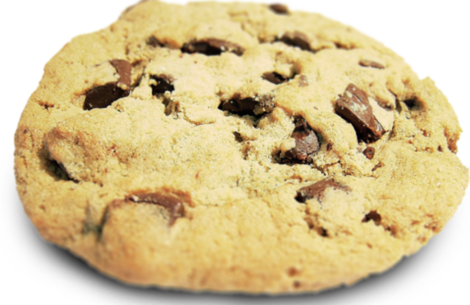

Why is this the best cookie recipe you might be asking yourself.
The answer to that question can be answered by my grandma or her grandma
actually. Yes, you red that right this recipe has been passes down though
generations and generations, this was the bees knees during the great
depression
said my great grandma, and if it has stayed this long you know
it has to be good.

ingredients
- 1 cup butter
- 1 cup of granulated sugar
- 1 cup of brown sugar
- 2 teaspoons of pure vanilla extract
- 2 eggs
- 3 cups of flour
- 1 teaspoon of baking soda
- 1/2 teaspoon baking powder
- 1 teaspoon of salt
- 2 cups of choclate chips
step by step
- preheat oven to 375 and line 3 baking sheets with parchment
paper
- use a medium bowl and mix flour, baking soda, baking powder
, and salt
- cream together butter and sugars
- beat eggs in vanilla until light
- mix in the dry ingredients until fully combined
- add in choclate chips
- roll dough into balls and place them evenly on the sheets
you prepared in step 1
- bake in oven for 8-10 minutes and take them out
when theystart to turn brown
- let them sit until desired tempature
- 1 cup butter
- 1 cup of granulated sugar
- 1 cup of brown sugar
- 2 teaspoons of pure vanilla extract
- 2 eggs
- 3 cups of flour
- 1 teaspoon of baking soda
- 1/2 teaspoon baking powder
- 1 teaspoon of salt
- 2 cups of choclate chips
step by step
- preheat oven to 375 and line 3 baking sheets with parchment paper
- use a medium bowl and mix flour, baking soda, baking powder , and salt
- cream together butter and sugars
- beat eggs in vanilla until light
- mix in the dry ingredients until fully combined
- add in choclate chips
- roll dough into balls and place them evenly on the sheets you prepared in step 1
- bake in oven for 8-10 minutes and take them out when theystart to turn brown
- let them sit until desired tempature